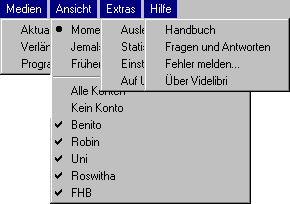
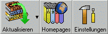
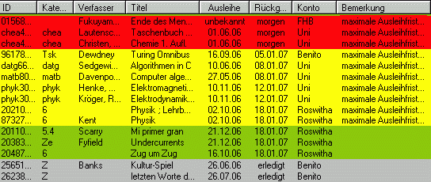
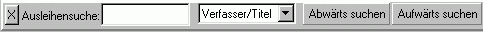
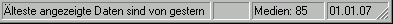

Hauptfenster
Dieses Fenster zeigt die ausgeliehenen Medien an und dient als Verbindung zu allen anderen Fenstern.Man kann es im Prinzip, von oben nach unten, in folgende fünf Bereiche unterteilen:
| Die Menüleiste | Hiermit erreicht man die einzelnen Menüs |
| Die Symbolleiste | Hier findet Symbole über die man Funktionen schneller erreichen kann |
| Die Medienliste | Hier werden die ausgeliehenen Medien angezeigt |
| Die Suchleiste | Hiermit kann man die Liste der ausgeliehenen Medien durchsuchen |
| Die Statusleiste | Hier erfährt man aktuelle Informationen über die Medienliste. |
Die Menüleiste
Die Menüleiste besteht aus vier Menüs, die man durch Anklicken einzeln aufklappen kann.Wären alle gleichzeitig geöffnet, so sähe sie (bei fünf bestimmten Konten) so aus:

Im folgenden sind alle vorhandenen Menüeinträge und Untermenüs aufgelistet und erklärt:
| Medien | Dieses Menü dient zum Aktualisieren und Verlängern der gespeicherten Medien |
| Aktualisieren | Über diese Untermenü aktualisiert man die Liste der Medien, das heißt Videlibri verbindet sich übers Internet mit der Bücherei und lädt eine Liste der ausgeliehen Medien herunter. |
| Alle Konten | Hiermit werden die Listen aller Konten aktualisiert | "Kontoname" | Hiermit wird nur eine Liste aktualisiert, die des Kontos "Kontoname". (Im Programm steht dort der angegebene Name) |
| Verlängern | Über diese Untermenü verlängert man die gespeicherten, verlängerbaren Medien. Im allgemeinen braucht man dieses Menü nicht, da das Programm dies, je nach Einstellung, automatisch tut. |
| Alle Medien | Wählt man dieses Untermenü werden von den noch zu wählenden Konten ohne Einschränkung alle verlängerbaren Medien verlängert. |
| von allen Konten | Hiermit werden alle verlängerbaren Medien aller Konten verlängert |
| "Kontoname" | Hiermit werden alle verlängerbaren Medien, des Kontos nur eine Liste aktualisiert, die des Kontos "Kontoname". (Im Programm steht dort der angegebene Name) |
| abhängig von der Abgbefrist | Über dieses Menü werden nur die verlängerbaren Medien verlängert, die in einer bestimmten Zeitspanne zurückgegebene werden müssen. |
| in xxxx Wochen | Es gibt vier Untermenüs dieser Form, wobei xxxx einen Wert von 1 bis 4 hat. Über diese Menüs werden die Medien verlängert, die in den nächsten xxxx Wochen abgegeben werden müssen. |
| bei allen Konten | Hiermit werden verlängerbaren Medien aller Konten verlängert, die in den nächsten xxxx Wochen abzugeben sind. |
| "Kontoname" | Hiermit werden verlängerbaren Medien des Kontos "Kontoname", die in den nächsten xxxx Wochen abzugeben sind, verlängert, (Im Programm steht dort statt "Kontoname" der angegebene Name) |
| Programm beeenden | Dieser selbsterklärende Eintrag hat mit den Medien nichts zu tun, steht aber aus traditionellen Gründen, im Menü, das am weitesten links ist. |
| Ansicht | Über diese Menü steuert man, welche Medien in der Liste angezeigt werden sollen. |
| Momentan ausgeliehene Medien | Es werden nur die Medien angezeigt, die im Moment ausgeliehen sind |
| Jemals ausgeliehene Medien | Es werden alle Medien angezeigt, die Videlibri bekannt sind. Also alle Medien die seit Benutzung des Programms ausgeliehen worden sind, inklusive denjenigen, die inzwischen wieder abgegeben worden sind (sofern die Speicherung dieser Daten nicht unter Extras\Einstellungen abgeschaltet wurde). |
| Früher ausgeliehene Medien | Es werden nur die Medien angezeigt, die ausgeliehen waren und inzwischen wieder abgegeben worden sind. |
| Alle Konten | Es werden die Medien aller Konten angezeigt. |
| Kein Konto | Es werden überhaupt keine Medien angezeigt. |
| "Kontoname" | Wird vor diesem Eintrag ein Haken angezeigt, so werden die Medien dieses Kontos angezeigt, wenn nicht, werden sie nicht angezeigt. Klickt man den Eintrag an, so wechselt der Zustand des Häkchens, wird es momentan angezeigt, so wird es ausgeschaltet, ansonsten eingeschaltet. |
| Extras | In diesem Menü gibt es erweiterte Funktionen, die über das Anzeigen und Verlängern von Medien hinausgehen. |
| Freischalten | Öffnet das Fenster zur Eingabe des Freischaltkodes. |
| Ausleihensuche | Aktiviert die Suchleiste. Alternativ kann man auch Strg+F drücken oder, falls die Leiste angezeigt wird, das Suchfeld anklicken. |
| Mediensuche | Öffnet ein Fenster , in dem man nach beliebigen Medien suchen kann. |
| Statistik | Öffnet die Statistik der ausgeliehenen Medien. |
| Einstellungen | Öffnet den Einstellungendialog. (Alternativ kann man Strg+E) drücken |
| Auf Updates prüfen | Überprüft ob es ein Update für Videlibri gibt und lädt es automatisch herunter und installiert es, falls man Administratorrechte hat. |
| Hilfe | Über dieses Menü erreicht man die Hilfe |
| Handbuch | Öffnet dieses Handbuch. |
| Fragen und Antworten | Öffnet eine Liste von Fragen und Antworten zu Videlibri. |
| Fehler melden | Öffnet den Fehlermeldendialog über den man mir Fehler melden kann. |
| Über Videlibri | Zeigt einen Infodialog an, indem man die aktuelle Versionnummer finden kann. |
Die Symbolleiste
Die Symbolleiste besteht aus drei anklickbaren Buttons:
Diese Buttons haben folgende Bedeutungen:
| Aktualisieren-Button | Dieser Button hat zwei Funktione: Klickt man auf das Bild oder den Text, so werden (falls eine Internetverbindung besteht) alle Medien aktualisieren. Klickt man auf den kleinen Pfeil neben dem Bild, so wird ein Menü angezeigt, in dem man ein Konto zum Aktualisieren auswählen kann. |
| Homepages-Button | Klickt man hier, wird ein Menü angezeigt, in dem man eine Bücherei auswählen kann. Klickt man eine an, so wird deren Onlinesuchkatalog geöffnet. Man kann auch "alle" auswählen um den Zentralkatalog der digiBib zu öffnen. |
| Einstellungen-Button | Dieser Button öffnet das Einstellungenfenster von VideLibri |
Die Medienliste
Diese Liste sieht, abhängig von den ausgeliehenen Medien und der Bildschirmgröße, ungefähr so aus:
Wie man sieht, steht jedes Buch in einer einzelnen Zeile und in den Spalten findet man die genaueren Informationen.
Es gibt dabei folgende Spalten:
| ID | Hier steht die von der Bücherei festgelegte Signatur eines Mediums |
| Kategorie | Hier steht die Ablkürzung für das grundsätzliche Thema des Buches |
| Verfasser | Hier steht natürlich der Autor |
| Titel | Hier steht natürlich der Titel |
| Jahr | Hier steht das Erscheinungsjahr |
| Ausleihe | Hier steht das Datum, an dem das Medium ausgeliehen wurde |
| Rückgabe | Hier steht das Datum, an dem das Medium zurückgegeben sein muss (oder "erledigt", falls das Medium bereits abgegeben worden ist) |
| Konto | Hier steht auf welchem Konto das Medium ausgeliehen wurde |
| Bemerkung | Hier steht normalerweise der Grund, warum ein Medium nicht verlängert werden kann |
| Stadtbüchereien Düsseldorf | Es kann der Autor oder der Titel fehlen oder abgekürzt sein, außerdem fehlt immer das Jahr |
| Universitätsbibliothek Düsseldorf | Es fehlen keine Informationen, das Ausleihdatum und die Bemerkung werden aber erst nach einer Weile angezeigt |
| Fachhochschulbibliotheken | Es fehlt die Kategorie, das Ausleihdatum und das Erscheinungsjahr |
| rot | Das Medium muss bald abgegeben werden. "Bald" bedeutet in der Standardeinstellung 3 Tage, kann aber unter Extras\Einstellungen geändert werden. |
| gelb | Das Medium ist nicht verlängerbar, muss aber noch nicht bald abgegeben werden |
| grün | Das Medium ist verlängerbar und muss nicht bald abgegeben werden |
| grau | Das Medium ist bereits abgegeben. |
Klickt man mit der rechten Maustaste auf ein Medium kann man weitere Optionen anfordern, oder das Medium verlängern.
Die Suchleiste
Die Suchleiste erscheint, wenn man Strg+F drückt oder im Menü Extras\Ausleihensuche auswählt.
Sie verschwindet wieder, wenn man im Suchfeld (dem weißen Feld zwischen "AUsleihensuche:" und "Verfasser/Titel") ESC drückt oder das X vor diesem anklickt.
Gibt man im Suchfeld einen Buchstaben/Text ein, so wird sofort nach diesem in der Medienliste gesucht und der entsprechende Eintrag hervorgehoben.
Welche Spalten dabei durchsucht werden hängt von der Auswahl im Feld daneben ab. Die Standardeinstellung ist Verfasser und Titel, man kann aber auch "Alle Felder" oder eine beliebige andere Spalte auswählen.
Will man den nächsten Treffer finden, muss man Enter drücken oder auf "Abwärts suchen" klicken.
Will man rückwärtssuchen, so muss man entweder Shift+Enter drücken oder auf "Aufwärts suchen" klicken.
Konnte etwas nicht gefunden werden, so färbt sich das Suchfeld rot.
Die Statusleiste
Die Statusleiste zeigt Informationen über die aktuelle Situation an.
In der ersten Spalte wird angezeigt, wann das zuletzt aktualisierte Konto aktualisiert wurde, oder "Mediendaten werden aktualisiert...", falls das Programm dies gerade tut.
Will man genauere Informationen haben, so muss man auf diese Spalte doppelklicken, woraufhin sich ein Fenster öffnet, in dem für jedes Konto angezeigt wird, wann es aktualisiert worden ist.
In der zweiten Spalte werden, falls vorhanden, offene Gebühren angezeigt.
In der dritten Spalte wird die Anzahl der Medien in der Medienliste gezeigt.
In der letzten steht das heutige Datum.